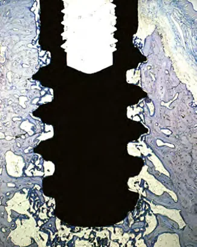

نسخه استخراجشده؛ ترجمه یا تأیید علمی انجام نشده است. وضعیت: captured
قانون پایه ساده است: هرچه ترومای جراحی کمتر، استخوانسازی روی سطح ایمپلنت سریعتر. برش، بلند کردن فلپ، دریل و درج ایمپلنت — هرکدام آسیبی وارد میکنند و بدن با التهابی هدفمند پاسخ میدهد: پاکسازی بافت آسیبدیده و آمادهسازی برای بازسازی.
وقتی ایمپلنت کمی از کانال پهنتر باشد (press-fit)، استخوانِ فشردهشده میکروفرکچر برمیدارد، عروق بخش کورتیکال کلاپس میکنند، تغذیه قطع میشود و آن نوار استخوان غالباً غیرزنده میشود.
برای همین، پایداری مکانیکی روز جراحی در هفتههای بعد کم میشود، در حالی که پایداری زیستی هنوز در حال ساخته شدن است؛ حاصل، یک افت پایداری گذراست. خردههای استخوانیِ حاصل از دریل هم در محفظهی زخم میمانند و جزئی از مصالح ترمیم میشوند.
و اینجا دو دنیای متفاوت داریم: در کورتیکال، اول باید استخوان مردهی فشرده جذب شود و بعد استخوان نو بیاید — مسیرِ کندتر. در اسفنجی، آسیب عمدتاً به مغز استخوانِ پرعروق خورده و ساختوساز تقریباً بلافاصله شروع میشود.
فضای میان رزوهها و استخوان، یک محفظهی زخم است و تقویم مشخصی دارد: ساعتهای اول لخته؛ حدود روز چهارم بافت گرانولاسیون با رگزایی؛ سپس ماتریکس همبند موقت و استئوئید که با رسوب هیدروکسیآپاتیت به استخوان بافهای بدل میشود — اولین جوانههایش از هفتهی اول دیده میشوند. هفتهی دوم بیشتر سطح ایمپلنت با استخوان نو پوشیده شده و از هفتهی ۶ تا ۱۲ ریمادلینگ، بافهای را با استخوان لاملار و مغز جایگزین میکند.
استخوان نو از دو جبهه میرسد: از دیوارهی استخوان میزبان به سمت ایمپلنت (distance osteogenesis) و مستقیماً روی خود سطح ایمپلنت، دور از استخوان مادر (contact osteogenesis). هر دو از همان هفتهی اول فعالاند.

نوع سؤال: ساخت کلمه · 14 خانه
حروف منبع: س · پ · ت · ی · ی · ر · د · ک · ی · ا · ه · ت · و · آ
نوع سؤال: ساخت کلمه · 9 خانه
حروف منبع: گ · د · ر · ل · ی · ی · م · ا · ن